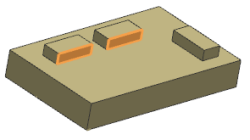
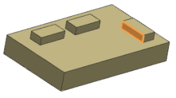
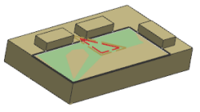

Edit the existing cut area by adding wall sets
-
In the Geometry group, click Specify Wall Geometry
 .
.
The Wall Geometry dialog box is displayed.
-
In the List group, click Remove .
The existing wall set is deleted from the list.
-
Select the two walls as shown for Set 1.

-
Click Add New Set
 .
.
-
Select the single wall as shown for Set 2.

-
Click OK.
The Floor Wall dialog box is displayed.

-
In the Actions group, click Generate

The tool path is now constrained by the two new wall sets.

-
Click OK to save the operation.
-
Close the part without saving it.